A Resposta
"Cataclismo além das estrelas."


Os filósofos às vezes falam sobre "A vontade do universo", uma consciência acima até mesmo dos deuses. Podemos nunca saber se o universo tem vontade, mas sabemos que ele tem uma resposta imune. Quando matéria estranha passou pelos céus de Valhalla, a resposta foi um anticorpo de proporções celestiais. Quando o nome Orion foi pronunciado, Ártemis passou a existir, embora ela não se chamasse assim por muitos anos. Nascida Mary Washington em West Plaza New York, ela era uma leitora voraz apaixonada por sorvete de morango. Enquanto Mary teve uma infância relativamente normal, seus pais às vezes se perguntavam por que ela olhava silenciosamente para o céu noturno por horas ou lia histórias da deusa Ártemis matando o caçador Orion repetidas vezes. Mary estava muito ansiosa para confrontar seu oponente. Ao primeiro sinal de seus poderes se manifestando, ela abriu um buraco de minhoca com a intenção de entrar em Valhalla. Em vez disso, ela emergiu no vácuo do espaço. Lutando pela sobrevivência, ela lutou para manter um casulo de atmosfera extraída de mundos próximos. Em desespero, ela arrancou o núcleo de uma estrela próxima para forjar sua armadura, extinguindo seu primeiro sistema solar. De lá, ela atravessou os perigos do universo, atravessando o Tri-Nova, acabando com a frota de Starchampion e implodindo o Leviatã de Eons, para citar alguns. Depois de pronto, o Artemis completo chegou a Asgard. Em Valhalla, Artemis ainda está sujeita às regras dos deuses locais e tenta completar seu destino no próprio Torneio. Sentindo uma frustração comum, Nix a colocou sob sua proteção e as duas frequentemente lutam para aprimorar suas habilidades com a foice. À medida que a reputação de Orion cresce na arena, Artemis se pergunta se toda Asgard pode estar infectada demais para ser salva.
 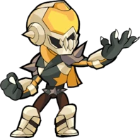
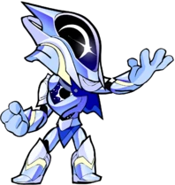
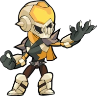
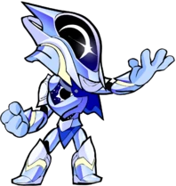
 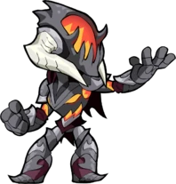
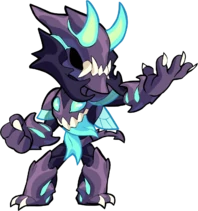
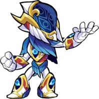
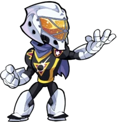
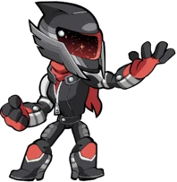
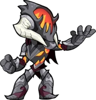
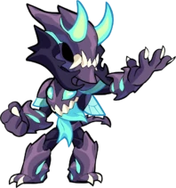
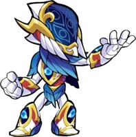
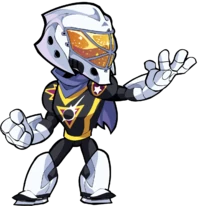
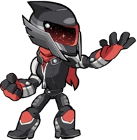